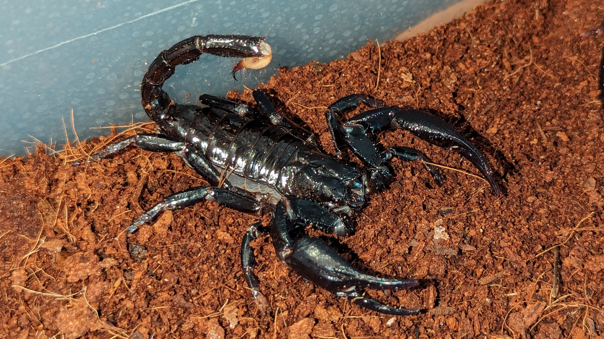
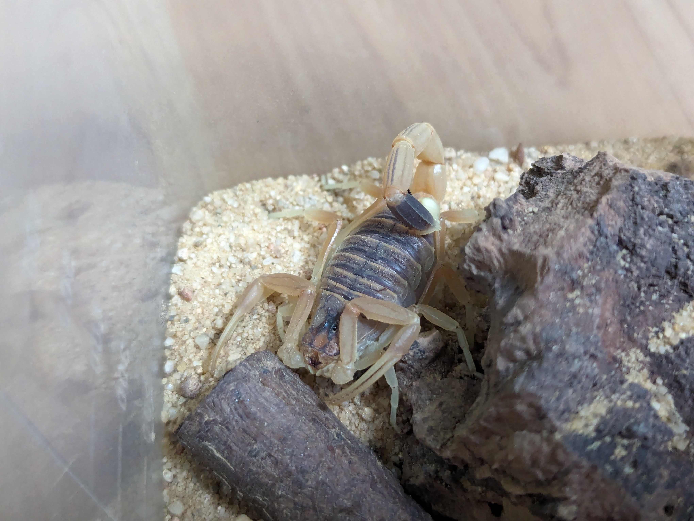

Heterometrus Spinifer
Scorpionidae
Indie, Malajsie, Thajsko, Vietnam, Kambodža a Srí Lanka
Živí se hmyzem, malými obratlovci
10 - 12 cm
25 - 30 °C
Štír Heterometrus spinifer, někdy známý také jako Giant Forest Scorpion, je druh štíra, který přitahuje pozornost svou velikostí a vzhledem. Patří do rodu Heterometrus, který zahrnuje několik druhů, ale H. spinifer je jedním z největších a nejznámějších.
Heterometrus spinifer je velký škorpion patřící mezi největší druhy škorpionů na světě. Dospělí jedinci mohou dosahovat délky těla až kolem 15 cm, přičemž samci jsou obvykle menší než samice. Jejich tělo je pokryto tvrdým exoskeletem, který jim poskytuje ochranu, a mají charakteristický ocas, který zakončuje jedovým bodcem.
Přirozeně se vyskytují v tropických lesích a vlhkých oblastech jižní a jihovýchodní Asie, jako jsou Indie, Thajsko, Malajsie a Indonésie. Jsou známy svou schopností přizpůsobit se různým prostředím a jsou často nalezeny v dutinách stromů, skalnatých oblastech nebo pod kameny.
Heterometrus spinifer je noční štír, který loví převážně hmyz a jiné bezobratlé. Díky svému dobře vyvinutému smyslu pro hmat a instinktu se skrývat je schopen účinně lovit i za soumraku. Přestože je vybaven jedovým bodcem, jeho jed není obvykle pro člověka smrtelný, ale může způsobit bolest a být nepříjmený, jed je často přirovnáván k vose.
Během páření samec vydává charakteristický třepotavý zvuk pomocí chelicer (klepeta), aby přilákal samici. Po páření samice zpravidla rodí živá mláďata, která nosí na hřbetě a pečuje o ně, dokud nejsou schopná samostatného života.
Tento druh je často chovaným štírem, ale ne každý má dostatečné znalosti pro péči o tento druh, proto zde shrnu základní informace o chovu.
Tohoto štíra je nejlepší chovat ve skupince v nějakém plastovém boxu nebo v teráriu. Jako podklad použijeme lignocel (kokosovou kůru), která dobře drží vlhkost, to proto, protože se tento štír vyskytuje v pralesích. Je potřeba, aby vrstva hlíny byla alespoň 4 cm, aby se štír mohl zahrabat, například pod kámen. Teplota v teráriu by měla být 25 - 30 °C, tím docílíme napříkald výhřevnou podložkou. Štíra krmíme jednou týdně, nejlépe cvrčky, šváby nebo červy.
Toto nemá být vidět
Leiurus Quinquestriatus
Buthidae
Alžírsko, Čad, Egypt, Etiopie, Libye, Mali, Niger, Tunisko
Živí se hmyzem, malými obratlovci
7 - 10 cm
28 - 35 °C
Leiurus quinquestriatus, známý také jako štír smrtonoš nebo štír smrti, patří mezi nejnebezpečnější škorpiony na světě. Jeho jed je extrémně silný a může být pro člověka smrtelný. Tento druh štíra je často spojován s pouštěmi Blízkého východu, zejména s Negevskou pouští, a představuje vážné nebezpečí pro obyvatele těchto oblastí.
Leiurus quinquestriatus je středně velký až velký štír, dosahující délky těla kolem 10 cm. Jeho tělo je obvykle žlutohnědé až světle hnědé barvy s charakteristickými tmavými pruhy přes zadní část těla a ocas. Jedná se o nočního lovce, který se přes den skrývá v podzemních norách nebo pod kameny a v noci vyráží za potravou.
Leiurus quinquestriatus se vyskytuje v suchých a aridních oblastech, jako jsou pouště a polopouště na Blízkém východě, včetně Izraele, Egypta, Jordánska, Sýrie a Saúdské Arábie.
Jed Leiurus quinquestriatus obsahuje kombinaci toxinů, které jsou pro člověka velmi nebezpečné. Jed jednotlivého štíra není sice dostatečně silný na okamžitou smrt, ale může způsobit vážné zdravotní problémy a dokonce i smrt, zejména u dětí nebo jedinců s oslabeným imunitním systémem.
Příznaky otravy jedem tohoto štíra mohou zahrnovat bolesti na místě vpichu, zvracení, průjem, bušení srdce, pocení, pěnu u pusy, potíže s dýcháním a v extrémních případech i paralýzu a selhání vitálních orgánů. Okamžitá léčba antiveninem je nezbytná pro přežití postiženého jedince.
Tento druh není v ČR tolik chovaný jako štíři rodu Heterometrus, protože se jedná o nejnebezpečnějšího štíra na planetě, především z důvodu jedu, agresivity, maskování a rychlosti.
Tohoto štíra je nejlepší chovat samostatně v nějakém plastovém boxu nebo v teráriu, popřípadě i v páru, ale s hodně úkryty. Jako podklad použijeme písek, protože v přírodě žije na poušti, kde je písek. Je potřeba, aby vrstva písku byla alespoň 3 cm, aby se štír mohl zahrabat, například pod kámen. Teplota v teráriu by měla být v rozemzí 28 - 35 °C, tím docílíme napříkald výhřevnou podložkou. Štíra krmíme jednou týdně, nejlépe cvrčky, šváby nebo červy.
Toto nemá být vidět